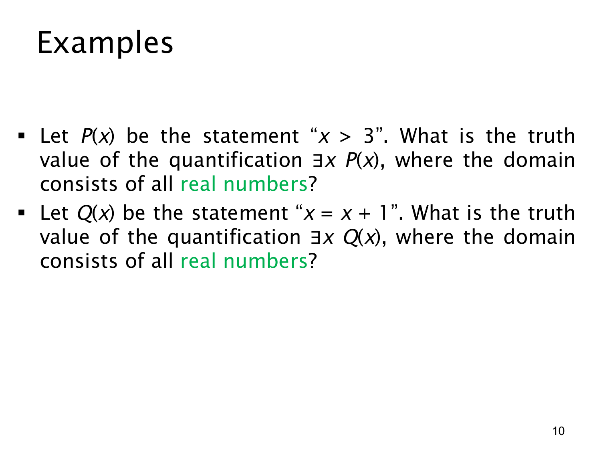

L1.2 · 第 10 页讲解原文
查看这一页课件

存在量词例题：给出见证或证明无解
两个例子的论域都是所有实数，都询问 ∃x 形式的命题。判断存在命题时，先尝试找一个满足条件的实数；若找不到，还需论证为什么任何实数都不可能满足。
第一题令 P(x) 表示 x>3。取 x=4，因为 4>3，所以 P(4) 真。4 是一个来自实数论域的见证，足以证明
∃xP(x)为真.
这里不要求每个实数都大于 3；例如 0 不满足也不妨碍存在命题为真。
第二题令 Q(x) 表示 x=x+1。若某个实数 x 满足该式，两边同时减去 x 就得到 0=1，矛盾。这个矛盾与 x 的具体数值无关，因此没有任何实数能满足 Q(x)。所以
∃xQ(x)为假.
两题对照展示了存在量词的两种证明方式：证真只需一个明确的满足例子；证假需要排除整个论域，而不能仅展示几个不满足的值。